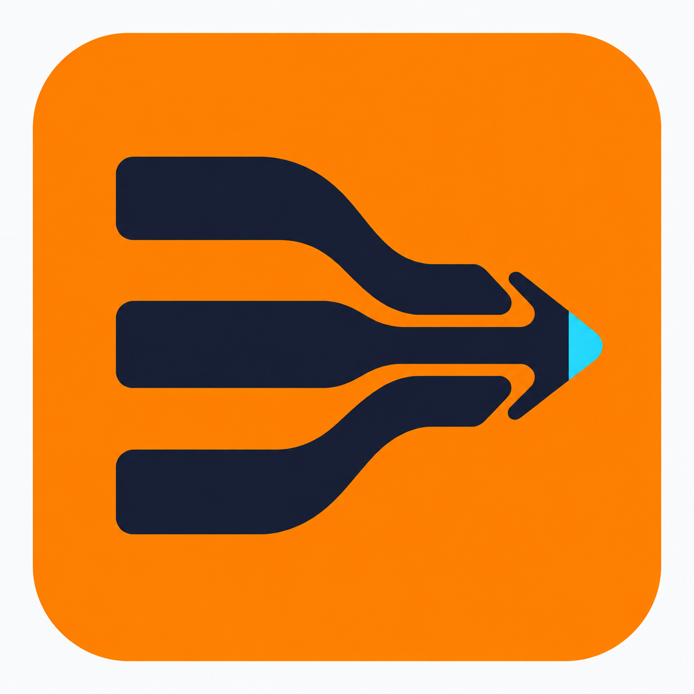
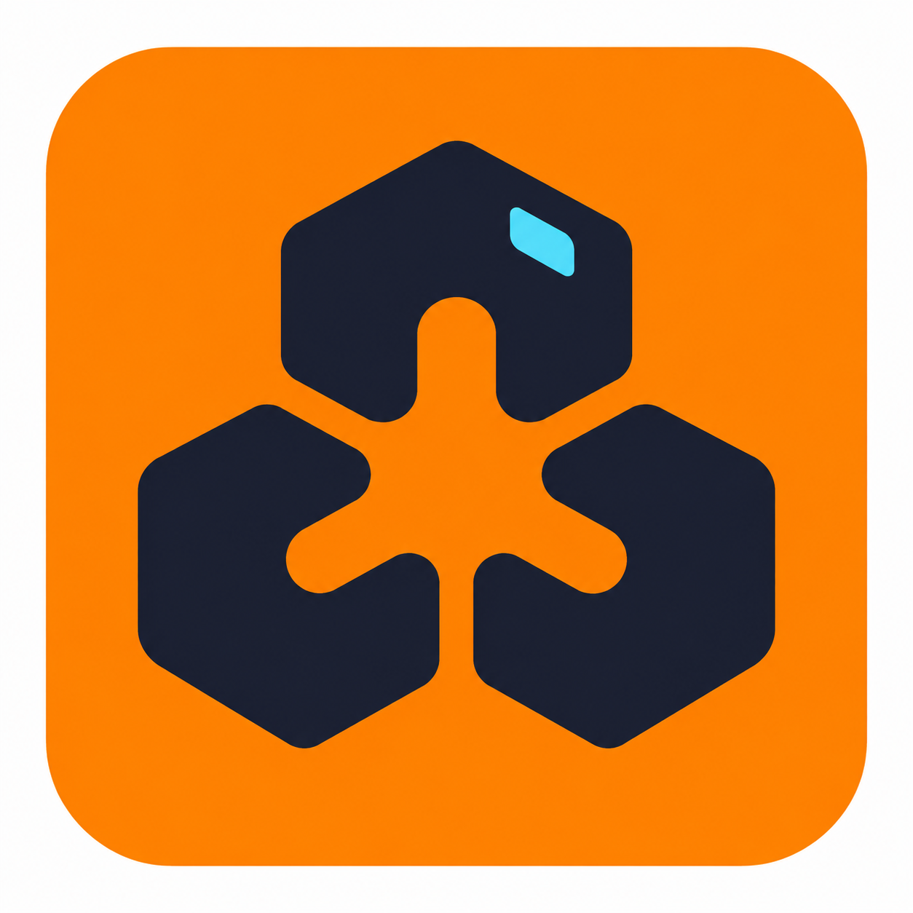
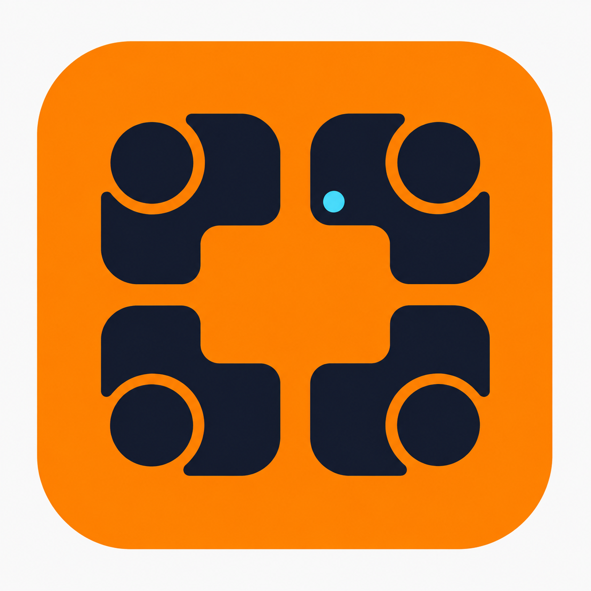

KANZEI / ICON EXPLORATION / 2026.09
并行 Agent，三种表达
亮橙作底，墨蓝构形，少量电光青点亮协作节点。
亮橙 #FF8700
墨蓝 #191C2B
电光青 #39D8F6

A
并行汇合
三路独立推进，朝同一方向汇合。最直接地表达并行执行。
16px24px32px48px64px
下载 A · PNG 原图 ↗


B
模块协作
推荐三个独立模块围绕共享空间。轮廓紧凑，适合作为主图标。
16px24px32px48px64px
下载 B · PNG 原图 ↗


C
共享空间
四个单元面向共同工作区。强调团队协作与多 Agent 参与。
16px24px32px48px64px
下载 C · PNG 原图 ↗